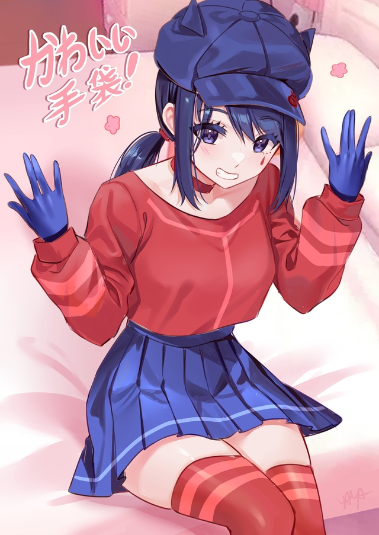
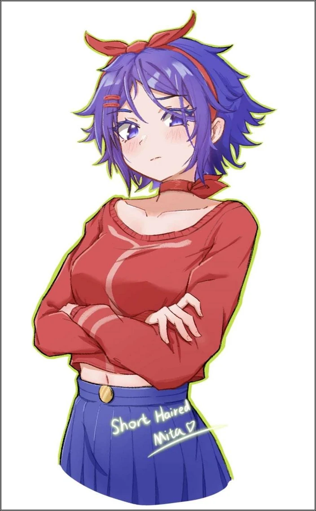
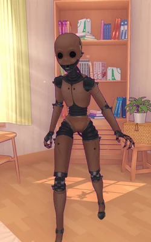
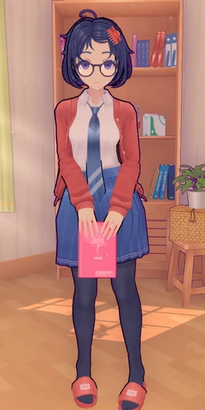

Безумная Мита
Безумная мита в игре "Мисайд" может быть персонажем с хаотичной, непредсказуемой и даже опасной натурой. Она представляет тёмную и непостоянную сторону магического мира, где её действия часто не поддаются логике. Её поведение переменчиво: в один момент она может быть дружелюбной, но в следующий — внезапно превратиться в угрозу, создавая хаос.
Добрая Мита
Олицетворяет светлую сторону магии и служит помощником игрока. Излучает спокойствие и тепло, её внешность гармонична: светящаяся аура и мягкие крылья. Добрая мита всегда поддерживает игрока, подсказывая верные пути и леча от ран.
Мита Кепочка
Юмористический персонаж, добавляющий элемент абсурда. Носит шапку, которая явно больше её самой. Шапка может менять вид: от шляпы с перьями до магического капюшона. Она всегда готова предложить необычные решения головоломок.
Мита Маленькая
Милый и невинный персонаж размером не больше ладони. Её движения быстрые, а голосок тонкий. Она помогает по мелочам: подсвечивает темные углы и указывает на спрятанные предметы, проникая туда, где другие не пройдут.
Мита Чиби
Персонаж в чиби-формате с огромной головой и выразительными глазами. Воплощение веселья и позитива. Её способности связаны с созданием комичных эффектов и изменением обстановки на более яркую и красочную.
Мита Ядро
Технологическая версия персонажа из гладкого металла. Её глаза — светящиеся датчики. Запрограммирована помогать игроку, используя анализ данных. Обладает встроенными сканерами и защитными барьерами.
Мита Коротковолосая
Сочетает утонченность и практичность. Решительна, независима и остра на язык. Её способности ориентированы на скорость и молниеносные удары. Предпочитает активные действия длинным размышлениям.
Мита Манекен
Персонаж с кукольной эстетикой и шарнирами в суставах. Двигается неестественно плавно или резко. Использует магию кукольных нитей и может манипулировать окружающей средой, создавая ловушки.
Мита Призрачная
Эфемерный персонаж из полупрозрачного тумана. Умеет проходить сквозь стены и вести игрока через миры духов. Её голос звучит как далекое эхо, а магия направлена на скрытность и невидимость.
Мита Сонная
Всегда пребывает в состоянии полусна, одета в уютную пижаму. Владеет магией сна: может усыплять врагов или перемещать игрока в мир сновидений для поиска ответов на загадки.
Мита 2D
Выглядит как плоская нарисованная иллюстрация. Способна скользить по поверхностям стен и "складывать" окружающий мир как лист бумаги. Видит скрытые плоские проходы, недоступные 3D персонажам.
Мила
Олицетворяет доброту и заботу. Её магия направлена на исцеление и создание защитных щитов. Мила — символ надежды, верящий, что сострадание может победить даже самые темные силы.
Мита Жуткая
Вызывает тревогу своим видом: бледная кожа, черные глаза и зловещая улыбка. Владеет силами тьмы и страха, создавая кошмары, которые парализуют сознание врагов. Самый загадочный и опасный образ.